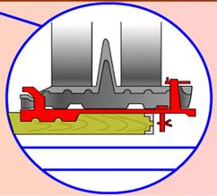

Ikinji usul boýunça HZM demir ýol açyk wagonlarynda demir şporlaryň toplumlary bilen berkidilýär.

Şporlar geriş görnüşli dik tekjeli demir direg plitasy bolup, olar maşynyň agramynyň täsiri astynda açyk wagonyň düşeginiň tagtalaryna girýär.
Zynjyryň traky bilen birleşdirmek üçin plitada berkidijili (öwrülýän gysyjy baýdajykly) iki dik sütün bar.
Toplum dört şpordan ybarat bolup, olar zynjyrlaryň aşagyna, olara ikinji we soňundan öňki direg tigirçekleriniň direýän ýerlerinde gurnalýar. Şporlar tehnikanyň uzaboýuna we kese süýşmegine päsgel berýär.
Iki şpor bir zynjyryň, iki şpor bolsa beýleki zynjyryň aşagynda gurnalmaga niýetlenen.
Şporlarda ýüklemezden öň sütünleriň dogry ýerleşdirilendigini, olaryň direg plitasynda ygtybarly berkidilendigini, şeýle hem çäklendirijiniň, berkidijiniň we olaryň şplintleriniň bardygyny barlamak zerurdyr.
Şporlardaky çäklendiriji barmak plitanyň kese böleginiň açyk wagonyň gapdal gyrasyna iň ýakyn deşigine salynmalydyr we şplint bilen berkidilmelidir. Açyk wagonyň düşeginiň tagtalaryny berkidýän burçlukdan çäklendirijä çenli aralyk 40 mm-den köp bolmaly däldir.
Maşyny ýüklemäge taýýarlamak
HZM açyk wagonda berkitmek üçin ýüklemezden öň şular zerurdyr:
— zynjyrlary şosse boýunça hereket edilýän ýaly dartmaly;
— hapadan, gyşyna bolsa gardan we buzdan gowy arassalamaly;
— tormoz ulgamynyň we diňiň saklaýjylarynyň sazlygyny barlamaly;
— ulanyş boýunça gollanma laýyklykda demir ýol boýunça daşamak üçin ýagdaýa getirmeli.
HZM açyk wagonda ýerleşdirmegiň we berkitmegiň tertibi
1. Açyk wagonda daşamak üçin ýagdaýda goýlan harby zynjyrly maşynda ikinji we soňundan öňki direg tigirçekleriniň aşagynda ýerleşýän zynjyrlaryň traklary bellenilýär.
2. Soňra maşyn öňe (yza) süýşürilýär, bellenen traklaryň sewkalaryna ýa-da deşiklerine birinji jübüt şporlar gurnalýar.
3. Maşyn yza (öňe) süýşürilýär we şonuň ýaly usul bilen ikinji jübüt şporlar gurnalýar.
4. Şondan soň maşyn başlangyç ýagdaýyna gaýtarylýar, şunda şporlar zynjyr lentalarynyň aşagynda, olara ikinji we soňundan öňki tigirçekleriň direýän ýerlerinde bolýar. Zerur bolan halatynda maşyn şporlaryň gerişleri açyk wagonyň düşeginiň tagtalaryna girýänçä açyk wagonyň üstünde tigirledilýär.
Ýüklenen maşynlary daşamaga taýýarlamak
Açyk wagonda ýüklenen we berkidilen HZM daşamak üçin şular zerurdyr:
— yza ýöreýiş geçirişine goýmaly we tormozlamaly;
— geçiriş gutusynyň swipçegini we tormoz pedalyny şondan soň möhürlemeli;
— ýangyç beriş swipçegini nol ýagdaýyna goýmaly.